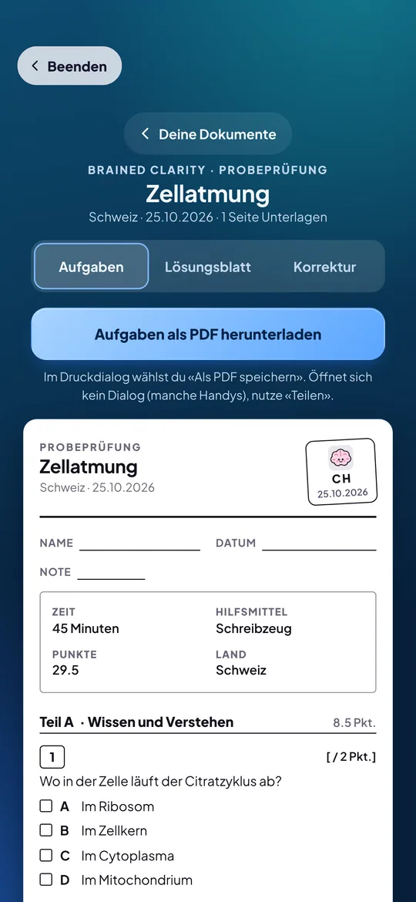
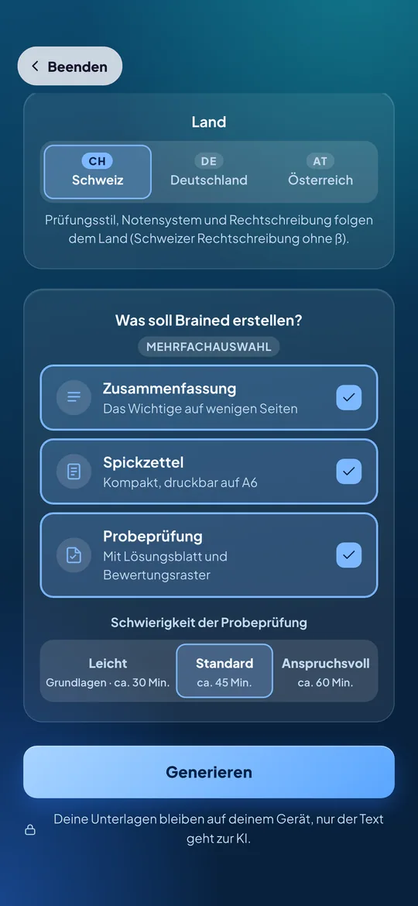
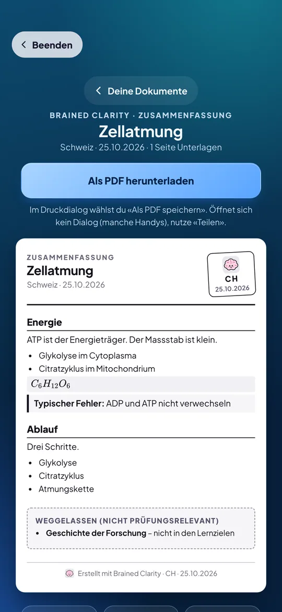
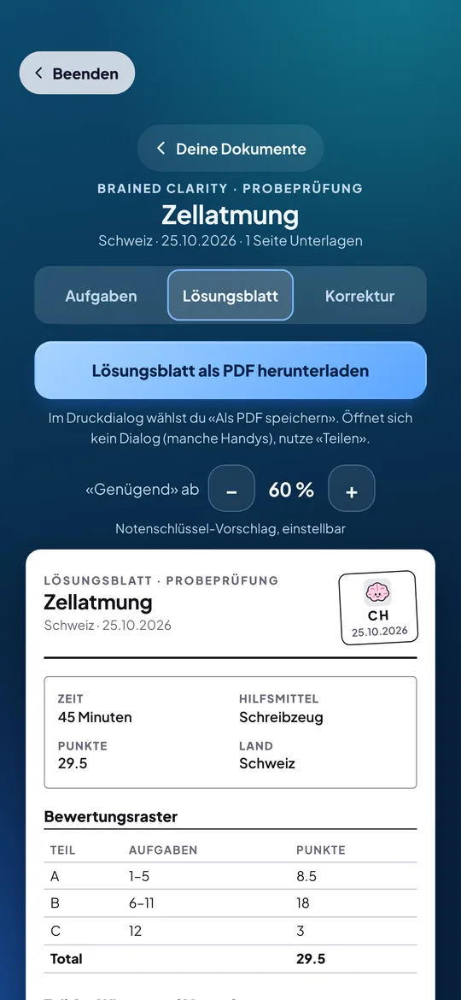

Dein Prüfungsgenerator.
Lade deinen Lernstoff hoch. Brained filtert das Unwichtige weg und erstellt dir Zusammenfassungen, Prüfungen und Spickzettel für das Schulsystem in der Schweiz, Deutschland oder Österreich.
Teil der Brained-App. Für Schweiz, Deutschland und Österreich · Deutsch, Français, Italiano, English

Von deinen Unterlagen zur Prüfung in vier Schritten.
Hochladen
Fotos, PDFs oder Textdateien, oder Text einfach einfügen. Optional ein Dokument mit Lernzielen oder eine Altklausur.
Land und Typ wählen
Schweiz, Deutschland oder Österreich, dazu Zusammenfassung, Spickzettel oder Probeprüfung.
Generieren
Ein Klick. Brained filtert das Unwichtige weg und schreibt die Dokumente im Prüfungsstil deines Landes.
Herunterladen
Als Dokument mit Brain-Stempel, bereit zum Ausdrucken oder als PDF speichern.
Hochladen, wählen, generieren.
Du gibst deinem Dokument einen Titel, wählst Land und Typ und tippst auf «Generieren». Mehrere Typen auf einmal sind möglich. Die Dokumente landen in deiner Bibliothek auf dem Gerät, du kannst sie jederzeit neu generieren.
- Bis 150 Seiten pro Generierung
- Lernziele optional: Brained filtert den Stoff danach

Was Brained für dich erstellt.
Zusammenfassung
Das Wichtige auf wenigen Seiten. Nicht Prüfungsrelevantes wird weggelassen und aufgelistet.
Spickzettel
Kompakt und druckbar im A6-Format, zum Ausschneiden.
Probeprüfung
Aufgaben im Stil deines Landes, mit Lösungsblatt und Bewertungsraster.
Das Wichtige. Ohne den Rest.
Brained liest deine Unterlagen und behält, was für eine Prüfung zählt. Formeln und typische Fehler stehen gleich dabei. Alles auf einem Dokument im A4-Look, mit Brain-Stempel in der Kopfzeile.
- Weggelassenes siehst du in einer Liste
- Herunterladen als PDF zum Ausdrucken

Mit Lösungsblatt und Bewertungsraster.
Die Probeprüfung hat Aufgabenblatt und Lösungsblatt. Das Bewertungsraster zeigt dir, wie viele Punkte es wofür gibt. Die Schwierigkeit wählst du selbst: leicht, standard oder anspruchsvoll.
- Lösungsblatt getrennt vom Aufgabenblatt
- Bewertungsraster mit Punkten pro Teil
- Notenschlüssel-Vorschlag nach dem System deines Landes, einstellbar

So, wie dein Land prüft.
Notensystem, Aufgabentypen und Wortwahl folgen dem Land. Bei der Schweiz schreibt Brained in Schweizer Rechtschreibung.
Deine Unterlagen bleiben bei dir.
Die Dateien bleiben auf deinem Gerät. Nur der Text, der zum Erstellen nötig ist, geht an die KI-Funktion. Kein Datenverkauf, Konto jederzeit in der App löschbar.
Ehrlich bleiben.
Die KI kann Fehler machen. Prüfe Wichtiges mit deiner Lehrperson. Die Dokumente sind Übungsmaterial und ersetzen keine offizielle Prüfung.
Häufige Fragen
Was kann ich hochladen?
Fotos, PDFs und Textdateien (.txt, .md), oder du fügst Text direkt ein. Pro Generierung sind bis zu 150 Seiten möglich. Optional gibst du Lernziele oder eine Altklausur dazu, damit Brained den Stoff danach filtert.
Wie bekomme ich das Dokument?
Du siehst es in der App als Dokument im A4-Look mit Brain-Stempel und lädst es als PDF herunter. Auf dem Handy öffnet sich das Teilen-Blatt oder der Druckdialog. Alle Dokumente bleiben in deiner Bibliothek auf dem Gerät.
Für welche Länder gibt es Clarity?
Für die Schweiz, Deutschland und Österreich. Du wählst das Land beim Generieren, Standard ist das Land aus deinem Profil.
Was passiert mit meinen Unterlagen?
Die Dateien bleiben auf deinem Gerät. Nur der Text, der zum Erstellen nötig ist, geht an die KI-Funktion. Details in der Datenschutzerklärung.
Ab welchem Alter?
Ab 13 Jahren. Unter 16 Jahren brauchst du das Einverständnis deiner Eltern.
Bereit für deine Prüfung?
Brained Clarity erscheint bald mit der App.